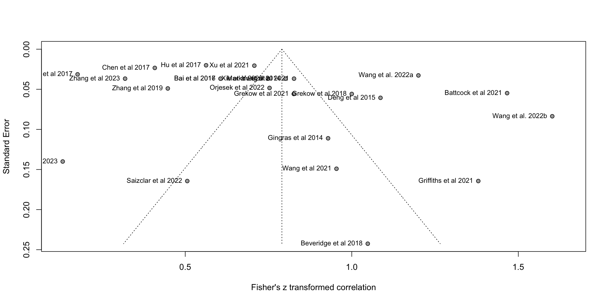

library(dmetar,quietly = TRUE)
library(tidyverse,quietly = TRUE)
library(meta)
library(DescTools)
library(ggrepel)Analysis
This assumes that the data has been parsed (parse-model-output.R, format-study-results.R) and preprocessed (processing.qmd).
Regression studies
Valence: Best model
For creating Table 2
Using all models
R_studies <- read.csv("R_studies.csv")
#R_summary <- read.csv("R_summary.csv")
# select regression studies with r2
#tmp <- dplyr::filter(R_summary,dimension=="valence")
tmp <- dplyr::filter(R_studies,dimension=="valence")
#dim(tmp)
#if all studies, remove two with NA values
tmp <- tmp[!is.na(tmp$values),]
#dim(tmp)
# Take all models
m.cor <- metacor(cor = values, # values
n = stimulus_n,
studlab = unique_id,
data = tmp,
fixed = FALSE,
random = TRUE,
prediction = TRUE,
# backtransf = TRUE,
# sm = "ZCOR",
method.tau = "PM",# was REML, but we switch to Paule-Mandel because Langan et al., 2019
method.random.ci = "HK",
title = "MER: Regression: Valence: Summary")
print(m.cor)Review: MER: Regression: Valence: Summary
Number of studies: k = 120
Number of observations: o = 73685
COR 95%-CI t p-value
Random effects model 0.5674 [0.5298; 0.6028] 23.67 < 0.0001
Prediction interval [0.0655; 0.8402]
Quantifying heterogeneity:
tau^2 = 0.0845 [0.0654; 0.1127]; tau = 0.2907 [0.2557; 0.3357]
I^2 = 97.5% [97.2%; 97.7%]; H = 6.29 [6.02; 6.58]
Test of heterogeneity:
Q d.f. p-value
4711.95 119 0
Details on meta-analytical method:
- Inverse variance method
- Paule-Mandel estimator for tau^2
- Q-Profile method for confidence interval of tau^2 and tau
- Hartung-Knapp adjustment for random effects model (df = 119)
- Prediction interval based on t-distribution (df = 118)
- Fisher's z transformation of correlationsprint(FisherZInv(m.cor$TE.random))[1] 0.5673962print(FisherZInv(m.cor$upper.random))[1] 0.6027944print(FisherZInv(m.cor$lower.random))[1] 0.529769#m.cor_backtransformed <- m.cor
#m.cor_backtransformed$TE <- FisherZInv(m.cor_backtransformed$TE)
#print(funnel(m.cor_backtransformed, common = FALSE, studlab=TRUE,backtransf=TRUE))Using the best model out of each study
#R_studies <- read.csv("R_studies.csv")
R_summary <- read.csv("R_summary.csv")
# select regression studies with r2
tmp <- dplyr::filter(R_summary,dimension=="valence")
#tmp <- dplyr::filter(R_studies,dimension=="valence")
#dim(tmp)
#if all studies, remove two
#tmp <- tmp[!is.na(tmp$values),]
#dim(tmp)
## Disambiguate the studies
tmp$studyREF[tmp$studyREF=="Wang et al 2022"] <- c("Wang et al. 2022a","Wang et al. 2022b")
# Max values
m.cor <- metacor(cor = valuesMax, # values
n = stimulus_n,
studlab = studyREF,#citekey, # unique_id
data = tmp,
fixed = FALSE,
random = TRUE,
prediction = TRUE,
# backtransf = TRUE,
# sm = "ZCOR",
method.tau = "REML",# could be PM (Paule-Mandel) as well
method.random.ci = "HK",
title = "MER: Regression: Valence: Summary")
print(m.cor)Review: MER: Regression: Valence: Summary
Number of studies: k = 24
Number of observations: o = 15660
COR 95%-CI t p-value
Random effects model 0.6585 [0.5574; 0.7404] 10.14 < 0.0001
Prediction interval [0.0042; 0.9180]
Quantifying heterogeneity:
tau^2 = 0.1376 [0.0804; 0.2802]; tau = 0.3709 [0.2836; 0.5293]
I^2 = 98.2% [97.9%; 98.5%]; H = 7.50 [6.86; 8.20]
Test of heterogeneity:
Q d.f. p-value
1294.03 23 < 0.0001
Details on meta-analytical method:
- Inverse variance method
- Restricted maximum-likelihood estimator for tau^2
- Q-Profile method for confidence interval of tau^2 and tau
- Hartung-Knapp adjustment for random effects model (df = 23)
- Prediction interval based on t-distribution (df = 22)
- Fisher's z transformation of correlationsprint(FisherZInv(m.cor$TE.random))[1] 0.6585298print(FisherZInv(m.cor$upper.random))[1] 0.740407print(FisherZInv(m.cor$lower.random))[1] 0.5573953#m.cor_backtransformed <- m.cor
#m.cor_backtransformed$TE <- FisherZInv(m.cor_backtransformed$TE)
#print(funnel(m.cor_backtransformed, common = FALSE, studlab=TRUE,backtransf=TRUE))Sub-division based on techniques
m.cor1 <- metacor(cor = valuesMax, # values
n = stimulus_n,
studlab = citekey, # unique_id
data = tmp,
fixed = FALSE,
random = TRUE,
prediction = TRUE,
subgroup = model_class_id,
# backtransf = TRUE,
# sm = "ZCOR",
method.tau = "REML",# could be PM (Paule-Mandel) as well
method.random.ci = "HK",
title = "MER: Regression: Valence: Summary")
print(m.cor1)Review: MER: Regression: Valence: Summary
Number of studies: k = 24
Number of observations: o = 15660
COR 95%-CI t p-value
Random effects model 0.6585 [0.5574; 0.7404] 10.14 < 0.0001
Prediction interval [0.0042; 0.9180]
Quantifying heterogeneity:
tau^2 = 0.1376 [0.0804; 0.2802]; tau = 0.3709 [0.2836; 0.5293]
I^2 = 98.2% [97.9%; 98.5%]; H = 7.50 [6.86; 8.20]
Test of heterogeneity:
Q d.f. p-value
1294.03 23 < 0.0001
Results for subgroups (random effects model):
k COR
model_class_id = Kernel Smoothing, Additive and KNN 2 0.4662
model_class_id = Random Forests 4 0.7024
model_class_id = Linear Methods 8 0.7840
model_class_id = Neural Nets 4 0.3404
model_class_id = Flexible Discriminants 6 0.6555
95%-CI tau^2
model_class_id = Kernel Smoothing, Additive and KNN [-0.6342; 0.9424] 0.0185
model_class_id = Random Forests [ 0.3914; 0.8694] 0.0803
model_class_id = Linear Methods [ 0.6249; 0.8806] 0.1370
model_class_id = Neural Nets [-0.0970; 0.6676] 0.0761
model_class_id = Flexible Discriminants [ 0.4838; 0.7786] 0.0574
tau Q I^2
model_class_id = Kernel Smoothing, Additive and KNN 0.1361 20.56 95.1%
model_class_id = Random Forests 0.2833 198.79 98.5%
model_class_id = Linear Methods 0.3701 195.78 96.4%
model_class_id = Neural Nets 0.2759 102.54 97.1%
model_class_id = Flexible Discriminants 0.2396 161.22 96.9%
Test for subgroup differences (random effects model):
Q d.f. p-value
Between groups 18.75 4 0.0009
Details on meta-analytical method:
- Inverse variance method
- Restricted maximum-likelihood estimator for tau^2
- Q-Profile method for confidence interval of tau^2 and tau
- Hartung-Knapp adjustment for random effects model (df = 23)
- Prediction interval based on t-distribution (df = 22)
- Fisher's z transformation of correlationsS<-summarise(group_by(tmp,model_class_id),n=n(),obs=sum(stimulus_n))
print(S)# A tibble: 5 × 3
model_class_id n obs
<chr> <int> <int>
1 Flexible Discriminants 6 4993
2 Kernel Smoothing, Additive and KNN 2 2582
3 Linear Methods 8 1762
4 Neural Nets 4 2249
5 Random Forests 4 4074Sub-division based on journals (engineering vs psych)
m.cor2 <- metacor(cor = valuesMax, # values
n = stimulus_n,
studlab = citekey, # unique_id
data = tmp,
fixed = FALSE,
random = TRUE,
prediction = TRUE,
subgroup = journal_type,
# backtransf = TRUE,
# sm = "ZCOR",
method.tau = "REML",# could be PM (Paule-Mandel) as well
method.random.ci = "HK",
title = "MER: Regression: Valence: Summary")Sub-division based on N features
tmp<-tmp[!is.na(tmp$feature_n_categories),] # remove missing values
dim(tmp)[1] 23 14m.cor3 <- metacor(cor = valuesMax, # values
n = stimulus_n,
studlab = citekey, # unique_id
data = tmp,
fixed = FALSE,
random = TRUE,
prediction = TRUE,
subgroup = feature_n_categories,
# backtransf = TRUE,
# sm = "ZCOR",
method.tau = "REML",# could be PM (Paule-Mandel) as well
method.random.ci = "HK",
title = "MER: Regression: Valence: Summary")
print(m.cor3)Review: MER: Regression: Valence: Summary
Number of studies: k = 23
Number of observations: o = 14916
COR 95%-CI t p-value
Random effects model 0.6597 [ 0.5535; 0.7448] 9.73 < 0.0001
Prediction interval [-0.0159; 0.9218]
Quantifying heterogeneity:
tau^2 = 0.1444 [0.0834; 0.2986]; tau = 0.3800 [0.2889; 0.5464]
I^2 = 98.3% [98.0%; 98.6%]; H = 7.65 [6.99; 8.38]
Test of heterogeneity:
Q d.f. p-value
1288.44 22 < 0.0001
Results for subgroups (random effects model):
k COR 95%-CI
feature_n_categories = Feature n > 260 7 0.6845 [0.5660; 0.7752]
feature_n_categories = Feature n < 18 5 0.8111 [0.5342; 0.9308]
feature_n_categories = Feature n > 18 & < 260 11 0.5477 [0.3434; 0.7025]
tau^2 tau Q I^2
feature_n_categories = Feature n > 260 0.0435 0.2085 211.87 97.2%
feature_n_categories = Feature n < 18 0.1815 0.4260 362.55 98.9%
feature_n_categories = Feature n > 18 & < 260 0.1331 0.3648 416.81 97.6%
Test for subgroup differences (random effects model):
Q d.f. p-value
Between groups 5.73 2 0.0570
Details on meta-analytical method:
- Inverse variance method
- Restricted maximum-likelihood estimator for tau^2
- Q-Profile method for confidence interval of tau^2 and tau
- Hartung-Knapp adjustment for random effects model (df = 22)
- Prediction interval based on t-distribution (df = 21)
- Fisher's z transformation of correlationsS<-summarise(group_by(tmp,feature_n_categories),n=n(),obs=sum(stimulus_n))
print(S)# A tibble: 3 × 3
feature_n_categories n obs
<chr> <int> <int>
1 Feature n < 18 5 3036
2 Feature n > 18 & < 260 11 7318
3 Feature n > 260 7 4562Sub-division based on N features and genres
tmp<-tmp[!is.na(tmp$feature_n_categories),] # remove missing values
dim(tmp)[1] 23 14m.cor4 <- metacor(cor = valuesMax, # values
n = stimulus_n,
studlab = citekey, # unique_id
data = tmp,
fixed = FALSE,
random = TRUE,
prediction = TRUE,
subgroup = feature_n_complexity_genre,
# backtransf = TRUE,
# sm = "ZCOR",
method.tau = "REML",# could be PM (Paule-Mandel) as well
method.random.ci = "HK",
title = "MER: Regression: Valence: Summary")
print(m.cor4)Review: MER: Regression: Valence: Summary
Number of studies: k = 23
Number of observations: o = 14916
COR 95%-CI t p-value
Random effects model 0.6597 [ 0.5535; 0.7448] 9.73 < 0.0001
Prediction interval [-0.0159; 0.9218]
Quantifying heterogeneity:
tau^2 = 0.1444 [0.0834; 0.2986]; tau = 0.3800 [0.2889; 0.5464]
I^2 = 98.3% [98.0%; 98.6%]; H = 7.65 [6.99; 8.38]
Test of heterogeneity:
Q d.f. p-value
1288.44 22 < 0.0001
Results for subgroups (random effects model):
k COR
feature_n_complexity_genre = Medium-large single genre/multi ... 4 0.6694
feature_n_complexity_genre = Small single genre study 3 0.8358
feature_n_complexity_genre = Medium single genre/multigenre ... 14 0.5874
feature_n_complexity_genre = Huge multigenre study 2 0.7203
95%-CI
feature_n_complexity_genre = Medium-large single genre/multi ... [ 0.3472; 0.8503]
feature_n_complexity_genre = Small single genre study [-0.1966; 0.9893]
feature_n_complexity_genre = Medium single genre/multigenre ... [ 0.4328; 0.7084]
feature_n_complexity_genre = Huge multigenre study [-0.1886; 0.9645]
tau^2 tau
feature_n_complexity_genre = Medium-large single genre/multi ... 0.0779 0.2791
feature_n_complexity_genre = Small single genre study 0.3182 0.5641
feature_n_complexity_genre = Medium single genre/multigenre ... 0.1183 0.3439
feature_n_complexity_genre = Huge multigenre study 0.0128 0.1131
Q I^2
feature_n_complexity_genre = Medium-large single genre/multi ... 202.35 98.5%
feature_n_complexity_genre = Small single genre study 358.17 99.4%
feature_n_complexity_genre = Medium single genre/multigenre ... 481.16 97.3%
feature_n_complexity_genre = Huge multigenre study 6.73 85.1%
Test for subgroup differences (random effects model):
Q d.f. p-value
Between groups 4.70 3 0.1949
Details on meta-analytical method:
- Inverse variance method
- Restricted maximum-likelihood estimator for tau^2
- Q-Profile method for confidence interval of tau^2 and tau
- Hartung-Knapp adjustment for random effects model (df = 22)
- Prediction interval based on t-distribution (df = 21)
- Fisher's z transformation of correlationsS<-summarise(group_by(tmp,feature_n_complexity_genre),n=n(),obs=sum(stimulus_n))
print(S)# A tibble: 4 × 3
feature_n_complexity_genre n obs
<chr> <int> <int>
1 Huge multigenre study 2 1068
2 Medium single genre/multigenre study 14 8130
3 Medium-large single genre/multigenre study 4 2750
4 Small single genre study 3 2968Visualise (forest and funnel plots)
fig2a <- forest(m.cor,
sortvar = TE,
prediction = FALSE,
print.tau2 = FALSE,
leftlabs = c("Author", "g", "SE"),studlab = studyREF)fig2b<-funnel(m.cor, common = FALSE, studlab=TRUE,backtransf=TRUE)
library(forestplot)Loading required package: gridLoading required package: checkmateLoading required package: abinddata<-tibble::tibble(mean=m.cor$cor,lower=FisherZInv(m.cor$lower),upper=FisherZInv(m.cor$upper),study=m.cor$studlab,n=m.cor$n,cor=round(m.cor$cor,2))
data<-dplyr::arrange(data,mean)
fp1 <- grid.grabExpr(print(data |>
forestplot(labeltext = c(study, n, cor),
xlab = "Correlation",
xticks = c(0, .25,.5,.75, 1),
clip = c(0, 1))|>
fp_add_header(study = "Study",n = "N",cor = expression(italic(r))) |>
fp_append_row(mean = m.cor$TE.common,
lower = m.cor$lower.common,
upper = m.cor$upper.common,
study = "Summary",
n = sum(m.cor$n),
cor = round(m.cor$TE.common,2),
is.summary = TRUE) |>
fp_set_style(box = "grey50",
line = "grey20",
summary = "black",
txt_gp = fpTxtGp(label = list(gpar(cex = 0.85)),
ticks = gpar(cex = 0.85),
xlab = gpar(cex = 0.85)))|>
fp_decorate_graph(grid = structure( m.cor$TE.common,gp = gpar(lty = 2, col = "grey30")))
)
)
source('../etc/custom_funnel_plot.R')
fp2 <- custom_funnel_plot(m.cor)
gridExtra::grid.arrange(fp1, fp2, ncol=2, widths=c(2,1),heights=c(2,1))Warning: Removed 3 rows containing missing values or values outside the scale range
(`geom_point()`).Warning: Removed 3 rows containing missing values or values outside the scale range
(`geom_text_repel()`).Warning: Removed 771 rows containing missing values or values outside the scale range
(`geom_line()`).
Removed 771 rows containing missing values or values outside the scale range
(`geom_line()`).
Explore qualities (in progress)
O <- find.outliers(m.cor)
# 6 datasets identified as outliers, without them the r drops to 0.5781
infan <- InfluenceAnalysis(m.cor)[===========================================================================] DONE print(eggers.test(m.cor))Eggers' test of the intercept
=============================
intercept 95% CI t p
4.997 -0.78 - 10.78 1.695 0.1042273
Eggers' test does not indicate the presence of funnel plot asymmetry. Re-run the analysis without the outliers
Custom funnel plot
To show the quality differences between core and eliminated studies.
tmpdata <- data.frame(SE = FisherZInv(m.cor$seTE), Zr = FisherZInv(m.cor$TE),studies=m.cor$studlab)
#tmpdata <- data.frame(SE = m.cor$seTE, Zr = m.cor$TE, studies=m.cor$studlab)
estimate = m.cor$TE.common
se = m.cor$seTE.common
se.seq=seq(0, max(m.cor$cor), 0.001)
ll95 = estimate-(1.96*se.seq)
ul95 = estimate+(1.96*se.seq)
ll99 = estimate-(3.29*se.seq)
ul99 = estimate+(3.29*se.seq)
meanll95 = estimate-(1.96*se)
meanul95 = estimate+(1.96*se)
dfCI = data.frame(ll95, ul95, ll99, ul99, se.seq, estimate, meanll95, meanul95)
fp = ggplot(NULL) +
geom_point(aes(x = SE, y = Zr), color='grey50',data=tmpdata) +
geom_text_repel(aes(x = SE, y = Zr, label=studies), data=tmpdata,size=2.5,max.overlaps = 40)+
xlab('Standard Error') + ylab('Correlation')+
geom_line(aes(x = se.seq, y = ll95), linetype = 'dotted', data = dfCI) +
geom_line(aes(x = se.seq, y = ul95), linetype = 'dotted', data = dfCI) +
geom_hline(yintercept = estimate, linetype='solid', color='grey50',linewidth=0.2) +
scale_x_reverse(breaks=seq(0,0.2,0.05),limits=c(0.15,0),expand=c(0.00,0.00))+
scale_y_continuous(breaks=seq(0.0,1.00,0.20),limits=c(0.0,1.00),expand=c(0.00,0.00))+
coord_flip()+
theme_bw()
print(fp)Warning: Removed 3 rows containing missing values or values outside the scale range
(`geom_point()`).Warning: Removed 3 rows containing missing values or values outside the scale range
(`geom_text_repel()`).Warning: Removed 771 rows containing missing values or values outside the scale range
(`geom_line()`).
Removed 771 rows containing missing values or values outside the scale range
(`geom_line()`).
Subgroup analysis according to techniques
add journal_type and stimulus_genre_mixed as a grouping option
m.cor_subgroups <- update(m.cor,
subgroup = model_class_id,
# subgroup = journal_type,
# subgroup = stimulus_genre_mixed,
tau.common = FALSE,
prediction = TRUE)
print(m.cor_subgroups)Review: MER: Regression: Valence: Summary
Number of studies: k = 24
Number of observations: o = 15660
COR 95%-CI t p-value
Random effects model 0.6585 [0.5574; 0.7404] 10.14 < 0.0001
Prediction interval [0.0042; 0.9180]
Quantifying heterogeneity:
tau^2 = 0.1376 [0.0804; 0.2802]; tau = 0.3709 [0.2836; 0.5293]
I^2 = 98.2% [97.9%; 98.5%]; H = 7.50 [6.86; 8.20]
Test of heterogeneity:
Q d.f. p-value
1294.03 23 < 0.0001
Results for subgroups (random effects model):
k COR
model_class_id = Kernel Smoothing, Additive and KNN 2 0.4662
model_class_id = Random Forests 4 0.7024
model_class_id = Linear Methods 8 0.7840
model_class_id = Neural Nets 4 0.3404
model_class_id = Flexible Discriminants 6 0.6555
95%-CI tau^2
model_class_id = Kernel Smoothing, Additive and KNN [-0.6342; 0.9424] 0.0185
model_class_id = Random Forests [ 0.3914; 0.8694] 0.0803
model_class_id = Linear Methods [ 0.6249; 0.8806] 0.1370
model_class_id = Neural Nets [-0.0970; 0.6676] 0.0761
model_class_id = Flexible Discriminants [ 0.4838; 0.7786] 0.0574
tau Q I^2
model_class_id = Kernel Smoothing, Additive and KNN 0.1361 20.56 95.1%
model_class_id = Random Forests 0.2833 198.79 98.5%
model_class_id = Linear Methods 0.3701 195.78 96.4%
model_class_id = Neural Nets 0.2759 102.54 97.1%
model_class_id = Flexible Discriminants 0.2396 161.22 96.9%
Test for subgroup differences (random effects model):
Q d.f. p-value
Between groups 18.75 4 0.0009
Details on meta-analytical method:
- Inverse variance method
- Restricted maximum-likelihood estimator for tau^2
- Q-Profile method for confidence interval of tau^2 and tau
- Hartung-Knapp adjustment for random effects model (df = 23)
- Prediction interval based on t-distribution (df = 22)
- Fisher's z transformation of correlations#forest(m.cor_subgroups,subgroup=TRUE)- Idea: visualise the distributions of the model successes within studies (done in preprocessing)
Arousal: Best model
# select regression studies with r2
tmp <- dplyr::filter(R_summary,dimension=="arousal")
#tmp <- dplyr::filter(R_studies,dimension=="arousal")
dim(tmp)[1] 24 14#tmp <- tmp[!is.na(tmp$values),]
dim(tmp)[1] 24 14#tmp<-drop_na(tmp)
m.cor <- metacor(cor = valuesMax,
n = stimulus_n,
studlab = citekey,
data = tmp,
fixed = FALSE,
random = TRUE,
prediction = TRUE,
backtransf = TRUE,
sm = "ZCOR",
method.tau = "REML",# could be PM (Paule-Mandel) as well
method.random.ci = "HK",
title = "MER: Regression: Arousal: Summary")
print(m.cor)Review: MER: Regression: Arousal: Summary
Number of studies: k = 24
Number of observations: o = 15660
COR 95%-CI t p-value
Random effects model 0.8070 [0.7453; 0.8550] 14.83 < 0.0001
Prediction interval [0.3466; 0.9541]
Quantifying heterogeneity:
tau^2 = 0.1276 [0.0746; 0.2631]; tau = 0.3571 [0.2731; 0.5130]
I^2 = 97.7% [97.2%; 98.1%]; H = 6.60 [5.99; 7.27]
Test of heterogeneity:
Q d.f. p-value
1001.16 23 < 0.0001
Details on meta-analytical method:
- Inverse variance method
- Restricted maximum-likelihood estimator for tau^2
- Q-Profile method for confidence interval of tau^2 and tau
- Hartung-Knapp adjustment for random effects model (df = 23)
- Prediction interval based on t-distribution (df = 22)
- Fisher's z transformation of correlationsTrimmed analysis
O <- find.outliers(m.cor)Visualise (forest and funnel plots)
forest(m.cor,
sortvar = TE,
prediction = FALSE,
print.tau2 = FALSE,
leftlabs = c("Author", "g", "SE"))
plot(eggers.test(m.cor))
Explore qualities (in progress)
meta <- metagen(valuesMax, sqrt(valuesMax),
data = tmp,
studlab = tmp$citekey,
comb.fixed = FALSE,
method.tau = "PM")
find.outliers(meta)
infan <- InfluenceAnalysis(meta)
print(eggers.test(meta))Subgroup analysis according to techniques
update(m.cor,
subgroup = model_class_id,
tau.common = FALSE)Review: MER: Regression: Arousal: Summary
Number of studies: k = 24
Number of observations: o = 15660
COR 95%-CI t p-value
Random effects model 0.8070 [0.7453; 0.8550] 14.83 < 0.0001
Prediction interval [0.3466; 0.9541]
Quantifying heterogeneity:
tau^2 = 0.1276 [0.0746; 0.2631]; tau = 0.3571 [0.2731; 0.5130]
I^2 = 97.7% [97.2%; 98.1%]; H = 6.60 [5.99; 7.27]
Test of heterogeneity:
Q d.f. p-value
1001.16 23 < 0.0001
Results for subgroups (random effects model):
k COR 95%-CI
model_class_id = Kernel Smoothing, Additive and KNN 2 0.8068 [0.5493; 0.9244]
model_class_id = Random Forests 4 0.8024 [0.7672; 0.8327]
model_class_id = Linear Methods 8 0.8812 [0.8079; 0.9277]
model_class_id = Neural Nets 4 0.5339 [0.3281; 0.6912]
model_class_id = Flexible Discriminants 6 0.8077 [0.6437; 0.9008]
tau^2 tau Q I^2
model_class_id = Kernel Smoothing, Additive and KNN 0.0022 0.0470 3.33 70.0%
model_class_id = Random Forests 0.0012 0.0348 6.34 52.7%
model_class_id = Linear Methods 0.0846 0.2908 104.87 93.3%
model_class_id = Neural Nets 0.0190 0.1379 21.17 85.8%
model_class_id = Flexible Discriminants 0.1125 0.3354 246.31 98.0%
Test for subgroup differences (random effects model):
Q d.f. p-value
Between groups 45.86 4 < 0.0001
Details on meta-analytical method:
- Inverse variance method
- Restricted maximum-likelihood estimator for tau^2
- Q-Profile method for confidence interval of tau^2 and tau
- Hartung-Knapp adjustment for random effects model (df = 23)
- Prediction interval based on t-distribution (df = 22)
- Fisher's z transformation of correlationsm.cor_subgroups <- update(m.cor,
subgroup = model_class_id,
tau.common = FALSE)
forest(m.cor_subgroups,subgroup=TRUE)
- Idea: visualise the distributions of the model successes within studies (done in preprocessing)
g1 <- ggplot(tmp,aes(y=valuesMax,fill=model_class_id))+
geom_histogram(show.legend = T)+
facet_wrap(.~studyREF)+
coord_flip()+
theme_bw()
g1
# S <- summarise(group_by(tmp,citekey),maxvalue=max(values))
# g<-ggplot(S,aes(y=maxvalue))+
# geom_histogram(bins = 14)+
# #facet_wrap(.~studyREF)+
# coord_flip()+
# theme_bw()
# gClassification studies
C_studies <- read.csv("C_studies.csv")
C_studies <- C_studies[!is.na(C_studies$values),]
C_summary <- read.csv("C_summary.csv")
m.cor <- metacor(cor = valuesMax, # values
n = stimulus_n,
studlab = studyREF, # unique_id
data = C_summary,
fixed = FALSE,
random = TRUE,
prediction = TRUE,
backtransf = TRUE,
sm = "ZCOR",
method.tau = "REML",# could be PM (Paule-Mandel) as well
method.random.ci = "HK",
title = "MER: Classification: Summary")
#print(m.cor)
#m.cor_backtransformed <- m.cor
#m.cor_backtransformed$TE <- FisherZInv(m.cor_backtransformed$TE)
print(funnel(m.cor, common = FALSE, studlab=TRUE,backtransf=TRUE))
$xlim
[1] 0.598722 2.439471
$ylim
[1] 0.09090909 0.00000000Custom plot
library(ggrepel)
tmpdata <- data.frame(SE = FisherZInv(m.cor$seTE), Zr = FisherZInv(m.cor$TE),studies=m.cor$studlab)
tmpdata$citekey<-str_replace_all(tmpdata$studies,'-.*$','')
tmpdata$citekey<-factor(tmpdata$citekey)
g <- ggplot(tmpdata,aes(y = SE, x = Zr,label=studies,color=citekey,fill=citekey)) +
geom_point(show.legend = FALSE) +
geom_label_repel(size=1.5,max.overlaps = 39,color="black",show.legend = FALSE)+
ylab('Standard Error') +
xlab('r')+
scale_y_reverse()+
# scale_x_continuous(breaks=seq(0.0,1.0,0.25),limits=c(0,1.0))+
# coord_flip()+
theme_bw()
print(g)
Visualise (forest and funnel plots)
forest(m.cor,
sortvar = TE,
prediction = FALSE,
print.tau2 = FALSE,
leftlabs = c("Author", "g", "SE"),studlab = citekey)
funnel(m.cor, common = FALSE, studlab=TRUE,backtransf=TRUE)
Explore qualities (in progress)
O <- find.outliers(m.cor)
# 6 datasets identified as outliers, without them the r drops to 0.5781
#infan <- InfluenceAnalysis(m.cor)
#print(eggers.test(m.cor))Re-run the analysis without the outliers
Custom funnel plot
To show the quality differences between core and eliminated studies (in progress).
tmpdata <- data.frame(SE = m.cor$seTE, Zr = m.cor$TE, studies=m.cor$studlab)
tmpdata$studyREF <- substr(tmpdata$studies,1,nchar(tmpdata$studies)-2)
tmpdata$studyREF <- str_replace_all(tmpdata$studyREF,'([0-9]+)',' et al \\1')
tmpdata$studyREF <- str_to_sentence(tmpdata$studyREF)
tmpdata$studyREF [1] "Agarwal et al et al 20" "Alvarez et al et al 20"
[3] "Bai et al et al 20" "Bai et al et al 20"
[5] "Bhuvanakumar et al et al 20" "Dufour et al et al 20"
[7] "Hizlisoy et al et al 20" "Hu et al et al 20"
[9] "Nguyen et al et al 20" "Panda et al et al 20"
[11] "Sorussa et al et al 20" "Yeh et al et al 20"
[13] "Zhang et al et al 20" "Zhang et al et al 20" estimate = m.cor$TE.common
se = m.cor$seTE.common
se.seq=seq(0, max(m.cor$cor), 0.001)
ll95 = estimate-(1.96*se.seq)
ul95 = estimate+(1.96*se.seq)
ll99 = estimate-(3.29*se.seq)
ul99 = estimate+(3.29*se.seq)
meanll95 = estimate-(1.96*se)
meanul95 = estimate+(1.96*se)
dfCI = data.frame(ll95, ul95, ll99, ul99, se.seq, estimate, meanll95, meanul95)
fp = ggplot(NULL) +
geom_point(aes(x = SE, y = Zr), color='grey50',data=tmpdata) +
geom_text_repel(aes(x = SE, y = Zr, label=studyREF), data=tmpdata,size=2.5,max.overlaps = 40)+
xlab('Standard Error') + ylab('Fisher\'s z transformed correlation')+
geom_line(aes(x = se.seq, y = ll95), linetype = 'dotted', data = dfCI) +
geom_line(aes(x = se.seq, y = ul95), linetype = 'dotted', data = dfCI) +
geom_segment(aes(x = min(se.seq), y = meanll95, xend = max(se.seq), yend = meanll95), linetype='dotted', data=dfCI) +
geom_segment(aes(x = min(se.seq), y = meanul95, xend = max(se.seq), yend = meanul95), linetype='dotted', data=dfCI) +
# scale_x_reverse()+
scale_x_reverse(breaks=seq(0,0.2,0.05),limits=c(0.15,0),expand=c(0.00,0.00))+
scale_y_continuous(breaks=seq(0.3,1.25,0.20),limits=c(0.3,1.23))+
coord_flip()+
theme_bw()
print(fp)Warning: Removed 6 rows containing missing values or values outside the scale range
(`geom_point()`).Warning: Removed 6 rows containing missing values or values outside the scale range
(`geom_text_repel()`).Warning: Removed 984 rows containing missing values or values outside the scale range
(`geom_line()`).
Removed 984 rows containing missing values or values outside the scale range
(`geom_line()`).Warning: Removed 984 rows containing missing values or values outside the scale range
(`geom_segment()`).
Removed 984 rows containing missing values or values outside the scale range
(`geom_segment()`).
Subgroup analysis according to techniques
add journal_type and stimulus_genre_mixed as a grouping option
m.cor_subgroups <- update(m.cor,
subgroup = model_class_id,
# subgroup = journal_type,
# subgroup = stimulus_genre_mixed,
tau.common = FALSE,
prediction = TRUE)
print(m.cor_subgroups)
#forest(m.cor_subgroups,subgroup=TRUE)- Idea: visualise the distributions of the model successes within studies (done in preprocessing)